Vehicle Expenses Automated — full illustrated user manual (HTML for browsers). Edit source: docs/i18n/ru/user-manual.md; regenerate with ./scripts/render-user-manual.sh.
Изменить исходный код (Markdown). Браузеры и встроенные в приложения программы чтения открывают обработанный HTML:
- Интернет:docs/user-manual.html(восстановить с помощью./scripts/render-user-manual.sh)
- Приложение: Помощь/О программе → полное руководство (в комплекте HTML + скриншоты)Не указывайте конечным пользователям необработанные URL-адреса
.md— браузеры отображают только обычный текст.
Отслеживание заправок топливом и расходов на транспортное средство с помощью камеры с дополнительной синхронизацией нескольких устройств и резервным копированием в ваших облачных учетных записях.
Это полное руководство (скриншоты + каждый шаг). На телефоне Меню → Справка — это краткое руководство по началу работы.
Здесь не рассматривается: Импорт старых изображений, эксперимент по выравниванию и эксперимент с насосом (инструменты для разработчиков/расширенные инструменты).
Они появляются на главных экранах. Знание их экономит много охоты.
| Где | Значок/управление | Что он делает |
|---|---|---|
| Верхняя панель | ☰ Меню (гамбургер) | Открывает панель навигации |
| Верхняя панель | ⓘ (справка по странице) | Краткая справка по текущей странице (рядом с меню, если оно доступно) |
| Верхняя панель | ?N (желтый) |
Ожидающие вопросы по обзору импорта — открывается Обзор импорта |
| Верхняя панель | ! (красный) | Недавно произошла ошибка с электронной таблицей или местом назначения фотографий — откройте Синхронизация, чтобы исправить |
| Верхняя панель | ☰ + ← | Отчет о детях и список расходов показывают меню и обратно вместе; Центр отчетов доступен только в меню |
| Настройки/редактирование топлива | ** ←** | Назад (таблица настроек/редактирование фотографий и топлива остаются в фокусе) |
| Быстрое заполнение | Белый круг (затвор) | Захват показаний одометра или насоса для оптического распознавания символов |
| Быстрое заполнение | Диск/Сохранить | Сохраните заправку (нужен автомобиль и хотя бы один из параметров одо/объем/стоимость) |
| Быстрое заполнение | ↕стрелки (переключатель режима) | Переключите режим одометра на режим насоса (стоимость/объем). Зеленая рамка выделяет активную группу полей |
| Быстрое заполнение | ↔ стрелки (между стоимостью и объемом) | Стоимость и объем свопа, если OCR поместит их в неправильные поля |
| Быстрое заполнение | Увеличение 1x / … | Коэффициенты масштабирования камеры, если объектив их поддерживает |
| Быстрое заполнение (после захвата) | Обновить на главной кнопке | Отменить предварительный просмотр и вернуться к прямой трансляции |
| Быстрое заполнение (во время обработки) | X на главной кнопке | Отменить текущий захват/распознавание текста |
| Расход | Сохранить | Экономьте расходы |
| Расход | Круг затвора | Сфотографировать чек |
| Расход | Галерея | Выберите изображение чека из библиотеки |
| Расход | Пересдать | Очистите текущую фотографию чека и сделайте снимок снова |
| Расходы / Управление транспортными средствами | + / − ФАБ | Увеличить предварительный просмотр фотографии |
| Диалоговое окно «Достопримечательности» | Изменить распознавание текста | Исправьте или добавьте текст ориентира, который пропустили двигатели |
| Электронная таблица / Фотоформы | 🔍 Поиск | Найдите на Google Диске лист или папку (после входа в систему) |
Символы валюты в полях стоимости и G/L в полях объема можно нажимать: откройте небольшое меню, чтобы изменить валюту или галлоны на литры для этой записи.
Основной ящик: Быстрое заполнение · Начало поездки · Управление транспортными средствами · Новые расходы · Отчеты · Настройки · Синхронизация · Справка · О программе.
Ящик экспериментов (Настройки → Показать экраны экспериментов): Эксперимент по выравниванию · Эксперимент с насосом · Импорт старых изображений.
Через центр отчетов (не в главном ящике): Список расходов · Заполнить историю.
Оптическое распознавание символов и автоматическое сопоставление транспортных средств работают лучше всего после того, как вы зарегистрируете каждое транспортное средство с помощью эталонной фотографии приборной панели, обрежете одометр и запустите Discovery, чтобы приложение сохранило текст ориентира для этого приборного щитка. (Как выбираются и сопоставляются ориентиры, будет более подробно описано в последующих обновлениях.)
Меню → Управление транспортными средствами. Выберите автомобиль (или Добавить новый автомобиль).
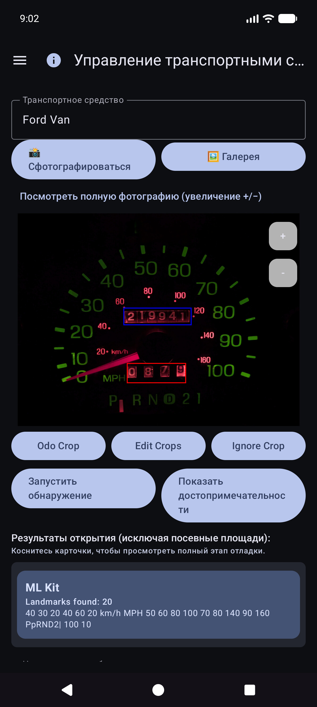
После Показать ориентиры прокрутите список и исправьте значения. Движки иногда пропускают маленькие цифры (например, часы 60 в правом нижнем углу кластера). Используйте Редактировать OCR, чтобы добавить или исправить их, чтобы идентичность автомобиля оставалась достоверной.
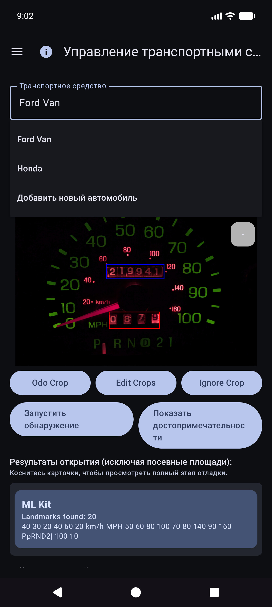
Вы по-прежнему можете использовать приложение, выбрав автомобиль и введя одометр, объем и стоимость в поле «Быстрое заполнение» — распознавание текста не является обязательным для каждого поля. Импорт галереи работает для эталонной фотографии, если вы предпочитаете не снимать в приложении.
Совет. После синхронизации таблиц определения транспортных средств (культуры, ориентиры) сохраняются в локальной базе данных — вам не нужно повторно открывать «Управление транспортными средствами для быстрого заполнения», чтобы использовать их.
Приложение создано таким образом, чтобы несколько телефонов или планшетов могли использовать одни и те же данные о парке, и чтобы вы могли хранить копии своих данных и фотографий на устройстве. Это делается с помощью пунктов назначения, которые вы настраиваете под вашими учетными записями или вашими автономными серверами, а не управляемым компанией «облаком транспортных расходов», которое могут видеть другие люди.
| Вид | Что он хранит | Типичное использование |
|---|---|---|
| Синхронизация таблиц/таблиц | Транспортные средства, заправки, расходы (строки и вкладки) | Объединение нескольких устройств + структурированное резервное копирование |
| Резервное фото | Двоичные изображения (тире/насос/чек/эталонные фотографии) | Резервное копирование фотографий + восстановление отсутствующих файлов |
Вы можете настроить несколько пунктов назначения каждого типа (мягкое ограничение для каждого типа). Включенные рабочие процессы Синхронизировать сейчас и фоновые выполняются вручную.
Вход и токены остаются на устройстве для выбранных вами поставщиков (Google, Microsoft, ключи S3, локальные URL-адреса и т. д.). Направления находятся под полным контролем пользователя — ваша учетная запись Google, ваш OneDrive, ваш контейнер MinIO, ваш хост EtherCalc и т. д. Никакие данные не передаются другим пользователям Vehicle Expenses через общий бэкэнд.
Настраивается в разделе Меню → Синхронизация → Синхронизация таблиц (также доступно из строк сводки настроек). Первоклассные варианты выбора:
| Цель | Заметки |
|---|---|
| Google Таблицы | Общее значение по умолчанию; вкладки «Транспортные средства», «Расходы» и «Топливо для каждого автомобиля» |
| Эксель | Книга Microsoft через привязку в стиле Graph/OneDrive |
| ЭфирКальк | Автономные комнаты для совместной работы с электронными таблицами |
| Другое → реализованные серверные части | Baserow, NocoDB, Airtable, PocketBase, Supabase, Firebase, Zoho Sheet |
Отложено/еще не обезглавлено (перечислено в разделе «Другое», но не полностью реализовано): OnlyOffice, Collabora. См. также индекс собственного хоста.
Экспорт/импорт CSV (ZIP того же макета вкладки) доступен в настройках в качестве портативной резервной копии, независимой от синхронизации в реальном времени.
Настраивается в разделе Меню → Синхронизация → Резервное копирование фотографий (также из строк сводки настроек):
| Цель | Заметки |
|---|---|
| Google Диск | Выбранная вами папка (просмотрите или вставьте URL-адрес) |
| OneDrive | Учетная запись Microsoft + префикс пути |
| С3 | AWS, Wasabi, Cloudflare R2, MinIO и другие конечные точки, совместимые с S3 |
| Другое | хранилище на базе rclone (например, WebDAV, SFTP и другие тщательно подобранные удаленные устройства, доступные в средстве выбора в приложении) |
Шпаргалки по настройке для автономных фотографий и табличных целей: self-host index.
– Строки объединяются по Идентификатору синхронизации с последней записью по временным меткам Обновлено.
- Удаление мягкое; новое редактирование на другом устройстве может восстановить строку.
– При вводе одной и той же заливки дважды на двух устройствах создаются две строки — удалите лишнюю, как только заметите.
- Более подробная информация: Примечания к поведению синхронизации и SYNC_BEHAVIOR.md.
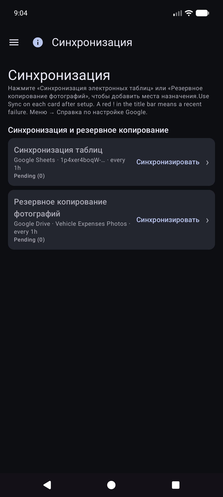

Транспортные средства, Расходы, Топливо - {название автомобиля}.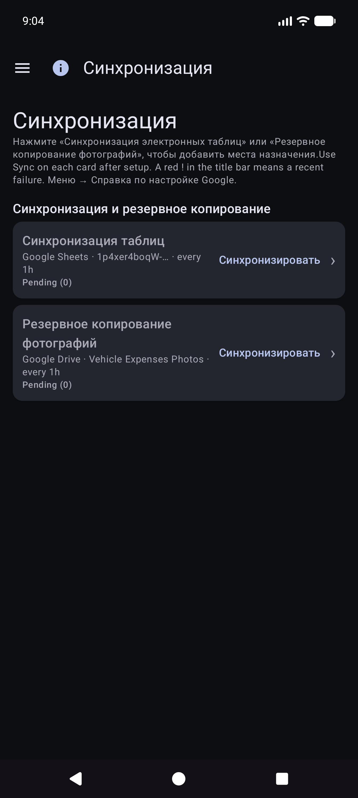

Ручная настройка Синхронизировать сейчас для фотографий — это полный проход; Фоновое резервное копирование обычно обрабатывает только ожидающие загрузки по расписанию.
Это главный экран, когда вы открываете приложение.
Вам не нужно сначала выбирать автомобиль. Если в разделе «Управление транспортными средствами» для транспортных средств установлены ориентиры, функция «Быстрое заполнение» автоматически определяет транспортное средство по изображению приборной панели после того, как вы зафиксируете показания одометра. Вы по-прежнему можете открыть раскрывающийся список Транспортное средство и изменить его, если это необходимо.
Оставайтесь в режиме одометра и кадрируйте кластер. Инструкция: Целься в одометр. Нажмите кнопку спуска затвора, чтобы сделать снимок.
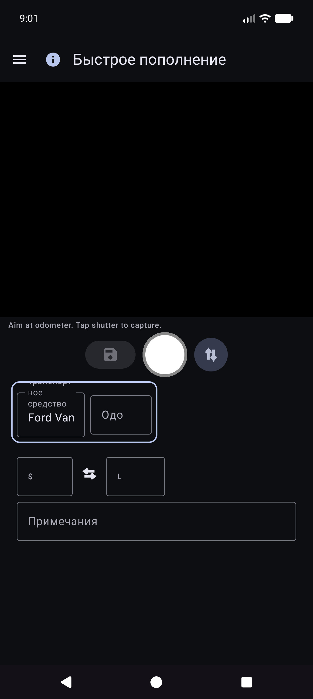
OCR заполняет Odo и пытается сопоставить транспортное средство с ориентирами (при необходимости просмотрите оба). Основная кнопка становится Повторить, чтобы повторить съемку. Инструкция подводит итог прочитанному.


Вы остаетесь в режиме быстрого заполнения до следующей остановки (поля очищаются после сохранения). Работайте полностью офлайн; синхронизация запускается позже в фоновом режиме, если она настроена.
Подсказка на экране (под строкой инструкций): Затвор = захват · Диск = сохранение · ↕ = режим одо/насоса · ↔ = стоимость/объем замены.
Меню → Новый расход.

Меню → Отчеты → Список расходов — просмотр прошлых расходов, не связанных с топливом; откройте элемент для редактирования.

Откройте строку из списка. Правильный поставщик, сумма, категория, транспортное средство и описание. Если квитанция находится только в резервной копии фотографии (нет читаемого локального файла), используйте Извлечь изображение из архива, когда она отображается (работает для всех настроенных мест назначения фотографий).

Меню → Начать поездку (после быстрого заполнения ящика). Снимите или введите одометр, выберите тип поездки, сохраните с помощью значка диска. Стоп — это ярлык для личного режима, который теперь находится в сохраненном местоположении GPS. Используйте ⓘ для контрольных напоминаний.
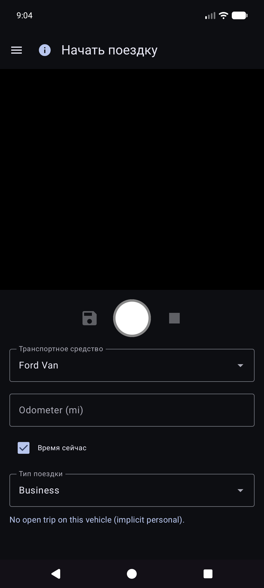
Начало поездки сохраняется в виде строк топлива с Тип поездки (не обычные заправки). Они отображаются в разделе Отчеты → Мили за поездку, а не в разделе «История топлива».
Меню → Отчеты открывает центр продуктов (сводка за все время + карточки каталога). Это единственная поверхность с отчетами о продуктах — отдельного элемента «Отчеты и диаграммы» нет.
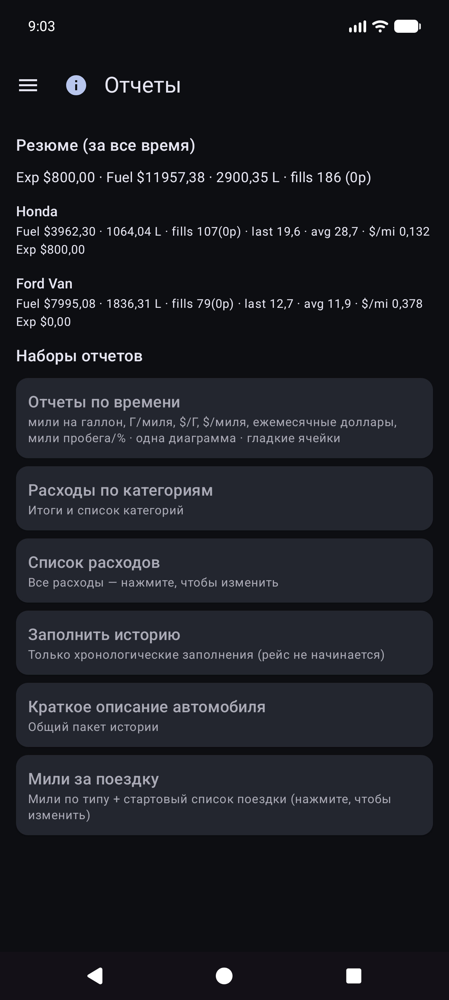
Откройте карточку для режима автомобиля (Все / Каждый / Один), фильтров по периодам, диаграмм и публикации (ТЕКСТ / CSV / PDF). Верхняя панель отчета о детях: ☰ + ← (и ⓘ при регистрации).
Основная карточка диаграммы. Дополнительные показатели (миль на галлон, объем/расстояние, например Г/миля, цена за единицу, например доллары/Г, стоимость/расстояние, ежемесячные доллары, мили поездки, % поездки по типу) с Плавными ячейками и независимыми шкалами Y (экономика слева; деньги и группы поездок справа).
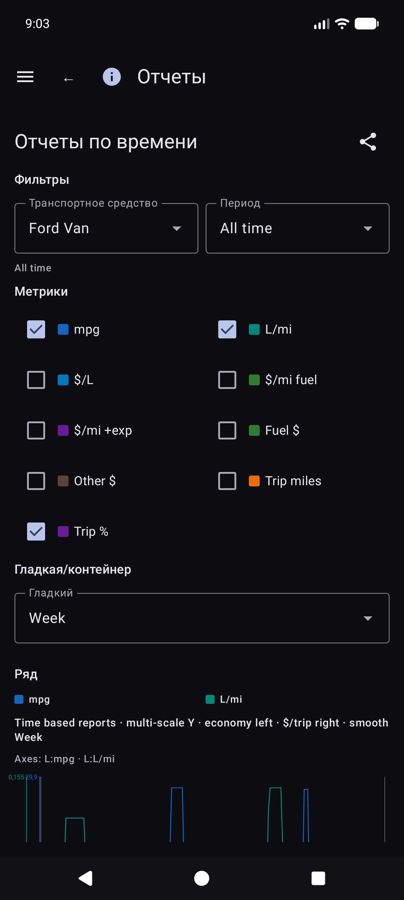
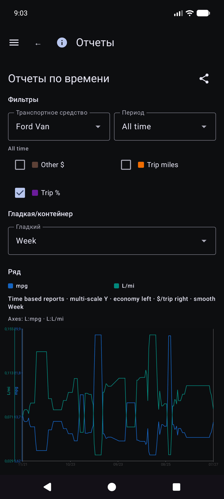
Подробности экономической математики: REPORTS_METRICS.md.
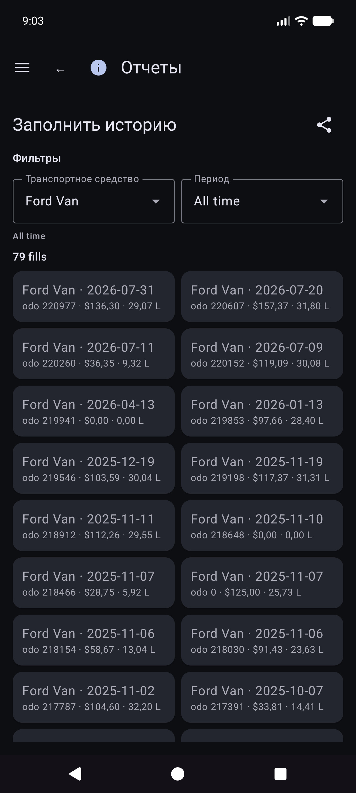
Отчеты → Мили за поездку — мили по типам, диаграммы и хронологический список начала/сегментов поездки. Нажмите на начало, чтобы открыть Редактировать заливку для этой строки.

В разделе «История заправок», «История топлива» или «Мили за поездку» откройте заправку. Макет: автомобиль и одометр, валюта до стоимости, объем, примечания. Тип поездки отображается только в том случае, если в строке указано начало поездки. Местоположение содержит сводку и Сведения о местоположении. Отсутствует локальное фото с облачным идентификатором: Получите изображение из архива.
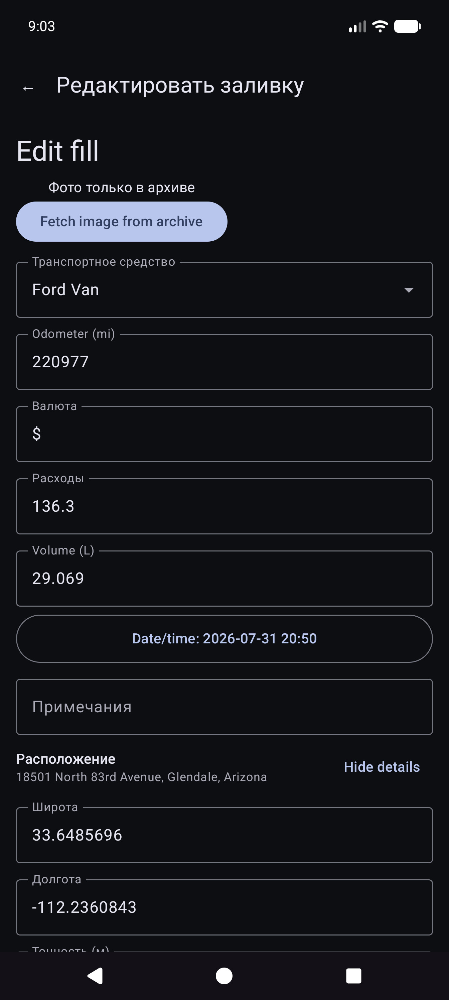
Другие карточки каталога включают расходы по категориям, сводную информацию об автомобиле и список расходов.
Деньги используют валюту каждой строки, если она установлена. В итоговых суммах для смешанных валют отображаются промежуточные итоги по каждой валюте (без автоматической конвертации валют).
Меню → Синхронизация — это центр для электронных таблиц и фотографий (не только скрытых в настройках).

Меню → Настройки.

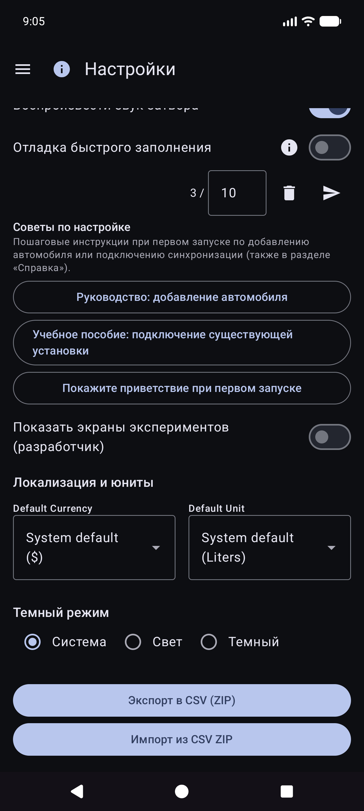
В качестве пунктов назначения выберите Меню → Синхронизация. В настройках по-прежнему могут отображаться строки сводки, открывающие одни и те же списки.
CSV экспорт/импорт (ZIP-архив вкладок «Транспортные средства/Расходы/Топливо») доступен в настройках, если он доступен в текущей сборке.
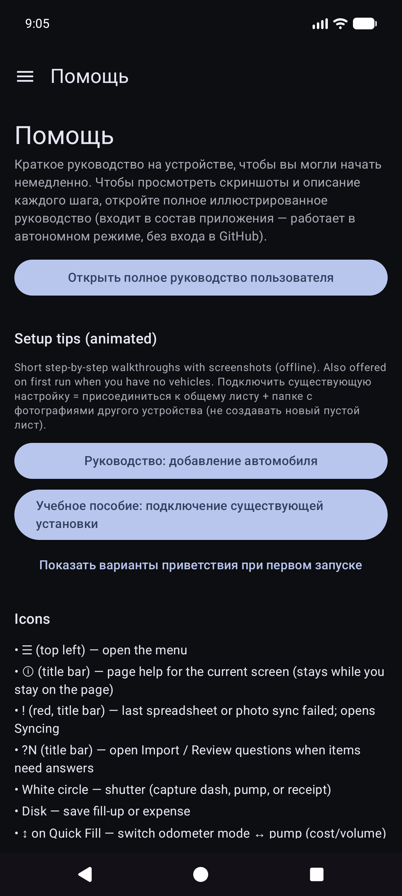
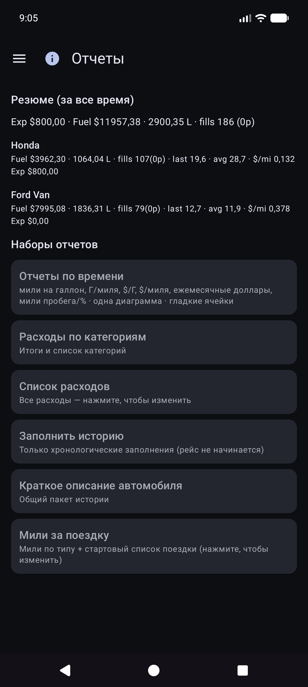